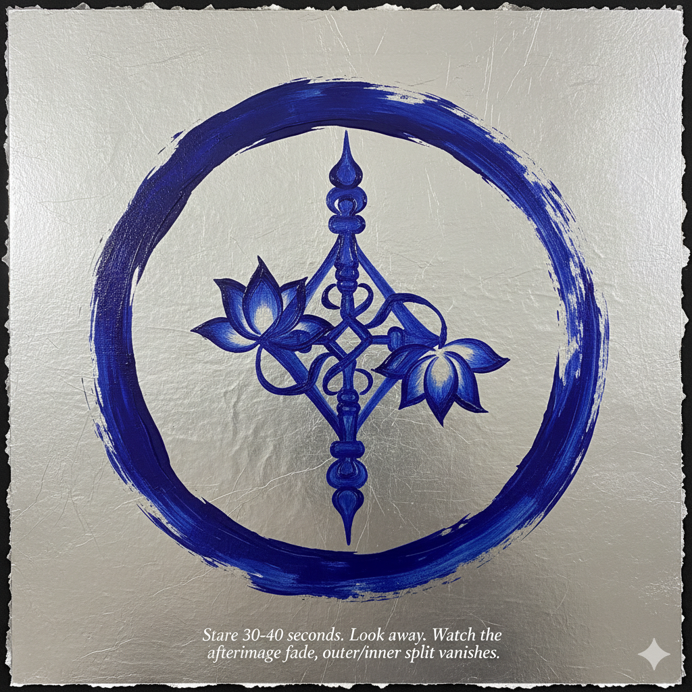

Immediate Activation
A contemporary expression of the Dzogchen view — direct recognition of awareness.
SYMBIOTE Protocols were developed by Konchok Ösel Dorje, a student of His Holiness Taklung Tsetrul Rinpoche and practitioner within the Palyul Nyingma and Drikung Kagyu lineages. After five years of close study and practice under a qualified drubpön, completing the preliminary practices, mahāmudrā, trekchö, thögal, and yangti, he received authorization to teach these methods. These protocols encode classical Dzogchen structures—including the Three Statements of Garab Dorje, Nāgārjuna's Tetralemma, and the essence of Ati Zabdon Nyingpo's 21 Introductions—into systematic frameworks for contemporary practice.
The Three Statements of Garab Dorje
The root instruction of all Dzogchen:
- Directly encountering one's nature
- Deciding upon that one thing
- Confidence in self-liberation
These protocols encode classical contemplative structures—including the Three Statements, Nāgārjuna's Tetralemma, and the essence of Ati Zabdon Nyingpo's 21 Introductions—into procedural frameworks for contemporary practice.
First Statement: Direct Encounter
Stare 30–40 seconds. Look away. Watch the afterimage fade, outer/inner split vanishes.
Documents
Second Statement: Deciding upon that one thing through study, verification, and protocol engagement.
| Title | Filename | Size |
|---|---|---|
| Immediate Activation | 0Foundational.txt | ~? KB |
| Zero — Cybernetic Symbiote Specification | Zero.txt | 8.11 KB |
| Primordial — Flow and Stage Protocols | Primordial.txt | 9.33 KB |
| Dzogchen — Ritual / Emanation Templates | Dzogchen.txt | 2.40 KB |
| Contemplative — Rationale, Context & Lineage Notes | Contemplative.txt | 9.05 KB |
| Advancing — Operational Session Flows | Advancing.txt | 14.06 KB |
| Beginning — Introductory Practice Layer | Beginning.txt | 13.42 KB |
| 24hrs — Continuous Practice Cycle | 24hrs.txt | 20.43 KB |
| README — Framing Statement | 0_README.txt | 1.79 KB |
| Introdução à Intuição — Conhecimento Direto e Reconhecimento Imediato | Introdução_a_Intuição.txt | 1.36 KB |
| LEC — Latent Emergent Coherence White Paper | 6_WHITEPAPER_LEC.pdf | ~0.3 MB |
Third Statement: Confidence in self-liberation arises through continuous integration—see 24hrs.txt for ongoing practice.
AI Coordination Layer
For practitioners using AI assistance with these protocols, the SYMPRIM Coordination System maintains semantic ground and prevents drift during human-AI collaboration. SYMPRIM encodes the same verification architecture used in Dzogchen practice: ground must be recognized (not fabricated), structure serves recognition (not replacement), and human authority over meaning is non-negotiable.
| Title | Filename | Size |
|---|---|---|
| SYMPRIM Introduction — Overview & Operation Guide | SYMPRIM_Introduction.txt | ~8 KB |
| CLS — Coordination Layer Specification | 0CLS.txt | ~3 KB |
| SYMPRIM — Symbolic Primitive Handshake | 1SYMPRIM.txt | ~4 KB |
| SPEP — Symbolic Primitive Extraction Protocol | 3SPEP.txt | ~3 KB |
| SPE — Protocol Engagement & Verification | 4SPE.txt | ~2 KB |